Chapter 12 A/B Testing and Uplift Modeling
12.1 Introduction: From Average Effects to Targeted Marketing
A/B testing is one of the most widely used tools in marketing analytics. Whether testing email subject lines, promotional offers, website layouts, or pricing messages, marketers frequently rely on randomized experiments to measure causal effects.
In this chapter, we begin with average treatment effects (ATEs), which is the traditional goal of A/B testing,and then move beyond averages to uplift modeling, which focuses on identifying who is most likely to be influenced by a marketing intervention.
Throughout the chapter, we use data from an email marketing experiment contained in the
email.camp.w dataset.
12.2 The Email Campaign Experiment
The dataset email.camp.w comes from a randomized email campaign experiment. Customers
were randomly assigned to receive either:
- a promotional email (treatment group), or
- no promotional email (control group).
The primary outcome of interest is whether the customer responded (e.g., clicked or converted). In addition, the dataset contains several customer characteristics (covariates) such as demographics and prior behavior.
Because treatment assignment was randomized, differences in outcomes between the two groups can be interpreted causally.
12.3 Checking the Randomization Assumption
12.3.1 Why Balance Checks Matter
Randomization ensures that treatment and control groups are similar on average. However, especially in applied settings, it is good practice to verify that observable covariates are balanced across groups.
Large imbalances may signal problems such as implementation errors or data issues.
12.3.2 Randomization Check Using rand_check()
The rand_check() function from the MKT4320BGSU package compares the distribution of selected covariates across
treatment groups and automatically applies appropriate statistical tests.
Usage:
rand_check(data, treatment, covariates, ft = TRUE, digits = 3)- where:
datais a data frame containing the treatment indicator and covariates.treatmentis a character string giving the name of the treatment variable. Must identify two or more groups.covariatesis a character vector of covariate names to include in the randomization check.ftis logical; if TRUE (default), return results as a flextable. If FALSE, return a data frame.digitsis an integer; number of decimal places to display in the output (default = 3).
An example is provided below. When reviewing the output, focus on:
- Scaled mean differences: values close to zero indicate good balance.
- p-values: large p-values suggest no systematic differences.
Well-balanced covariates support the validity of the experiment.
rand_check(data = email.camp.w, treatment = "promotion",
covariates = c("recency", "history", "womens", "zip"),
ft = TRUE)Variable | Mean | SD | Scaled Mean Difference | p-value | |
|---|---|---|---|---|---|
Treatment | Control | ||||
recency | 5.810 | 5.725 | 3.504 | 0.024 | 0.227 |
history | 245.995 | 242.539 | 253.384 | 0.014 | 0.495 |
womens | 0.545 | 0.539 | 0.498 | 0.011 | 0.574 |
zip:Rural | 0.143 | 0.148 | 0.353 | -0.014 | 0.395 |
zip:Surburban | 0.459 | 0.445 | 0.498 | 0.027 | |
zip:Urban | 0.398 | 0.406 | 0.490 | -0.017 | |
12.4 Estimating the Average Treatment Effect (ATE)
12.4.1 What Is the ATE?
The average treatment effect measures the average impact of the promotion across all customers. In an email campaign, this answers the question: Did sending the promotion increase response rates overall?
12.4.2 ATE via Regression
For binary outcomes, a linear regression with a treatment indicator is equivalent to a difference-in-means estimator. When the outcome is binary, this is known as a linear probability model (LPM).
12.4.3 Using easy_ab_ate()
We estimate the ATE using a regression model that includes the treatment indicator and
optionally adjusts for covariates by using the easy_ab_ate() function from the MKT4320BGSU package.
Usage:
easy_ab_ate(model, treatment, ft = TRUE)- where:
modelis a fitted linear regression model of class lm. This model should include the treatment variable and (optionally) covariates.treatmentis a character string with the name of the treatment variable (in quotes).ftis logical; if TRUE (default) return a flextable. If FALSE, print full regression results to the console.
Note that to use this function, you must first create a linear regression model using the lm() function. The model should have a response variable as the dependent variable, the treatment variable as an independent variable, and any additional covariates as additional independent variables. The results should be saved to an object. For example:
object <- lm(response ~ treatment + cov_1 + cov_2 + ... + cov_k, data = data)
m_ab_visit <- lm(visit ~ promotion + recency + history + womens + zip,
data = email.camp.w)
easy_ab_ate(model = m_ab_visit, treatment = "promotion", ft = TRUE)
| Without | With | ||
|---|---|---|---|---|
Characteristic | Beta | p-value | Beta | p-value |
(Intercept) | 0.106 | <0.001 | 0.151 | <0.001 |
promotion | 0.049 | <0.001 | 0.050 | <0.001 |
recency | -0.006 | <0.001 | ||
history | 0.000 | <0.001 | ||
womens | 0.046 | <0.001 | ||
zip | ||||
Rural | — | |||
Surburban | -0.053 | <0.001 | ||
Urban | -0.065 | <0.001 | ||
p-value | <0.001 | <0.001 | ||
R² | 0.005 | 0.024 | ||
m_ab_spend <- lm(spend ~ promotion + recency + history + womens + zip,
data = email.camp.w)
easy_ab_ate(model = m_ab_spend, treatment = "promotion", ft = TRUE)
| Without | With | ||
|---|---|---|---|---|
Characteristic | Beta | p-value | Beta | p-value |
(Intercept) | 0.651 | <0.001 | 1.265 | 0.011 |
promotion | 0.436 | 0.108 | 0.450 | 0.097 |
recency | -0.081 | 0.042 | ||
history | 0.000 | 0.703 | ||
womens | 0.049 | 0.858 | ||
zip | ||||
Rural | — | |||
Surburban | -0.596 | 0.144 | ||
Urban | 0.098 | 0.814 | ||
p-value | 0.11 | 0.032 | ||
R² | 0.000 | 0.001 | ||
The table compares two models:
- Without covariates: a pure A/B comparison.
- With covariates: a regression-adjusted estimate.
The treatment coefficient represents the average change in response probability caused by the promotion in isolation (in the without covariates column) or when controlling for other variables (in the with covariates column).
12.4.4 Why Average Effects Are Not Enough
While the ATE is useful, it hides important heterogeneity:
- Some customers may respond very positively.
- Others may be unaffected or even respond negatively.
From a managerial perspective, sending promotions to everyone may be inefficient or costly. This motivates uplift modeling, which focuses on targeting customers who are most likely to be influenced.
12.5 Introduction to Uplift Modeling
12.6 Estimating Uplift with easy_uplift()
12.6.1 Model Specification
The outcome variable can be either continuous, like amount spent (outcome) after a promotion (treatment), or it can be binary, like if they visited or not (outcome) after a promotion (treatment). To perform a uplift modeling using regression, we will use the easy_uplift() function from the MKT4320BGSU package. This function performs uplift modeling based on either logistic regression (for binary outcomes) or linear regression (for continuous outcomes). The function uses the two-model, indirect modeling approach.
Usage:
easy_uplift(model, treatment, newdata = NULL, bins = 10, aspect_ratio = NULL)- where:
modelis a fitted regression model of class glm (binary logit) or lm.treatmentis a character string giving the name of the treatment variable. The variable must have exactly two levels and be coded as (0/1), logical, or (“Yes”, “No”).newdatais an optional data frame on which to compute uplift (e.g., holdout or test data). If NULL, uplift is computed on the model data.binsis an integer; number of groups used for the uplift tables and plots. Must be between 5 and 20. Default is 10.aspect_ratiois an optional numeric aspect ratio applied to all plots. Default is NULL.
In order to use the function, we must first create our base model:
- The base model is usually a model with no interactions included, along with the treatment variable. But if known interactions are to be used, the base model can include the interactions also.
- The base model must contain the treatment variable.
Base model examples:
email_visit <- glm(visit ~ promotion + recency + history + zip + womens,
data=email.camp.w, family="binomial")
email_spend <- lm(spend ~ promotion + recency + history + zip + womens,
data=email.camp.w)Once the base model is created, we are aready to use the easy_uplift() function:
$qini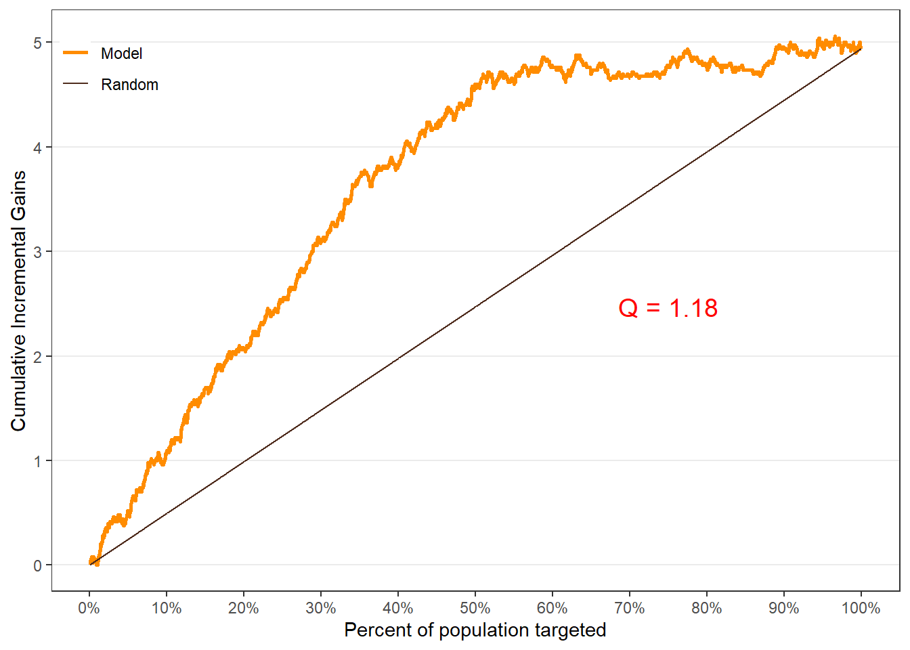
$uplift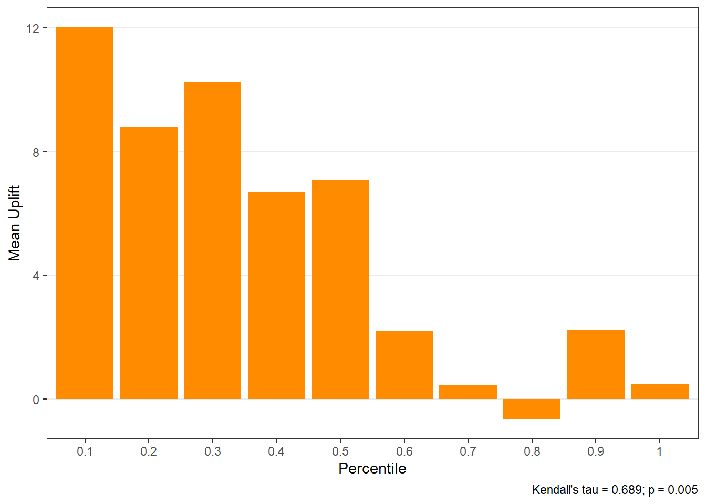
$c.gain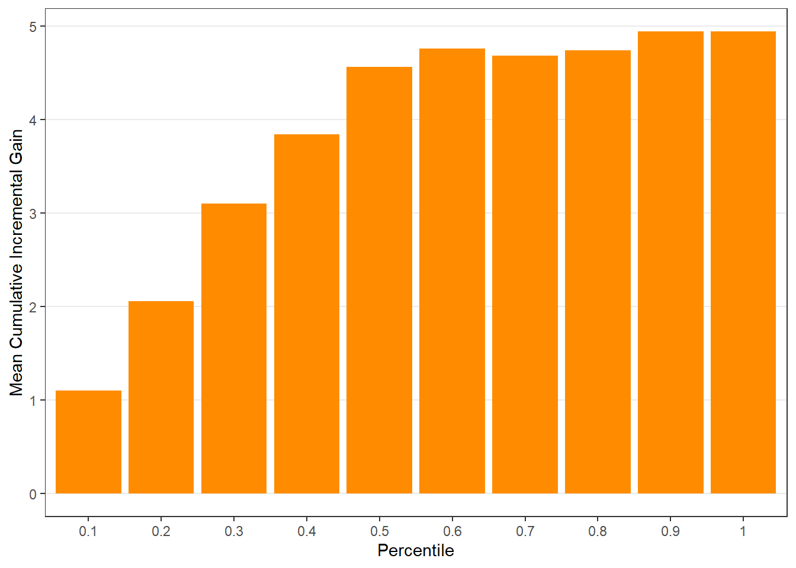
$qini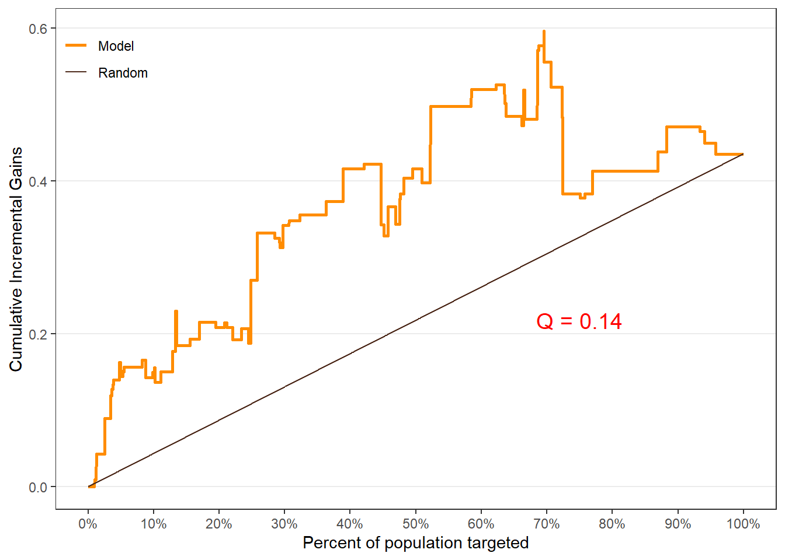
$uplift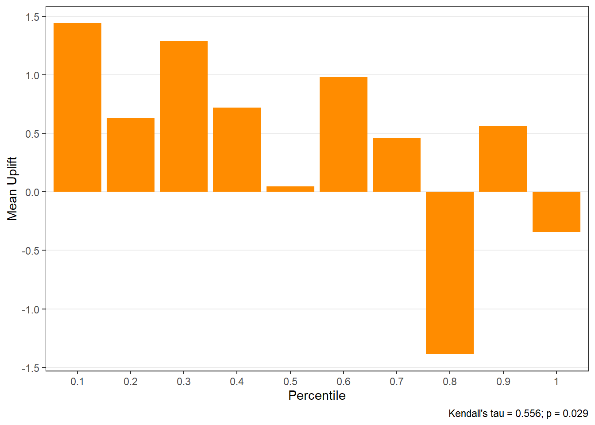
$c.gain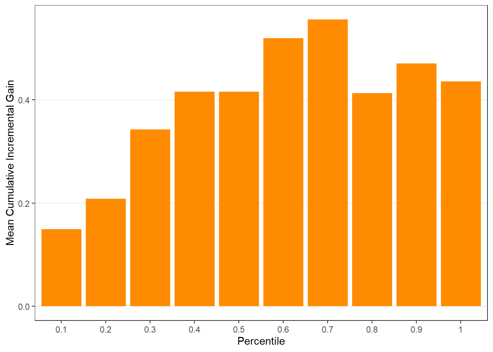
12.6.2 Interpreting Core Outputs
The uplift object includes:
- predicted individual-level lift appended to original data (
$all), - uplift table by percentile group (
$group), - diagnostic plots, including:
- uplift by group (
$plots$uplift), - cumulative gain (
$plots$c.gain), - Qini curve (
$plots$qini).
- uplift by group (
Customers in the top-ranked groups should exhibit the largest incremental gains from treatment.
12.7 Diagnosing Uplift with Lift Plots
12.7.1 Why Lift Diagnostics Matter
Lift diagnostics help explain why uplift varies across customers and which covariates drive heterogeneity.
12.7.2 Using easy_liftplots()
We use the easy_liftplots() function from the MKT4320BGSU package to easily create lift plots.
Usage:
easy_liftplots(x, vars = "all", pairs = NULL, ar = NULL, ci = 0.95,
bins = 30, numeric_bins = 5, by_numeric_bins = 3, grid = TRUE,
top = NULL, ft = TRUE)- where:
xis an object returned byeasy_uplift()(must include x\(all and x\)covariates or x\(spec\)covariates).varsis a character vector of covariate names to plot. Default is “all” (uses x\(covariates / x\)spec$covariates).pairsis an optional list of length-2 character vectors specifying interaction-style plots to create, e.g., list(c(“recency”,“zip”), c(“gender”,“income”)).aris an optional aspect ratio passed to theme(aspect.ratio = ar). Default is NULL.ciaffects the error-bar style. Use 0 for \(\pm 1\) SD error bars, or one of c(0.90, 0.95, 0.975, 0.99) for normal-approximation confidence intervals. Default is 0.95.binsis an integer; number of bins for the histogram. Default is 30.numeric_binsis an integer; number of quantile bins for numeric covariates. Default is 5.by_numeric_binsis an integer; number of quantile bins to use for the second variable in a pair when it is numeric. Default is 3.gridis logical; if TRUE, also return paginated cowplot grids of plots. Default is TRUE.topis an optional integer. If provided, only the toptopcovariates (by score_wmae) are included in plots_main/pages_main. Rankings are still computed for all covariates.ftis logical; if TRUE (default), return ranking tables as flextable objects.
A histogram is always produced, which shows the distribution of predicted uplift across customers. It is saved as $hist.
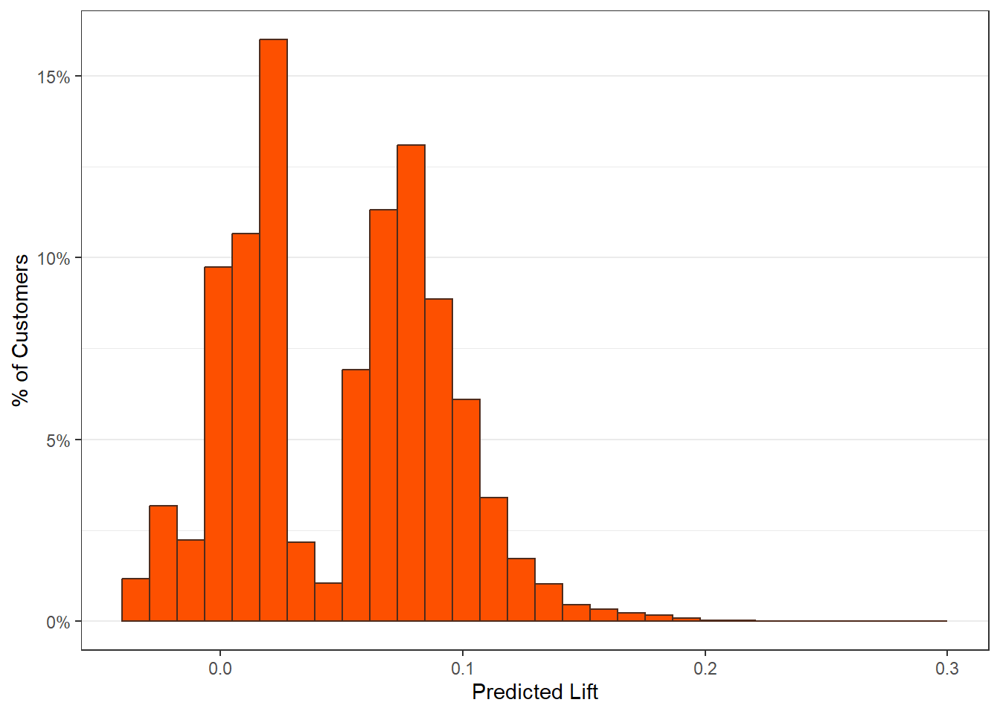
The main lift plots are saved in $plots_main. Lift-by-covariate plots display how average uplift varies across customer segments.
$recency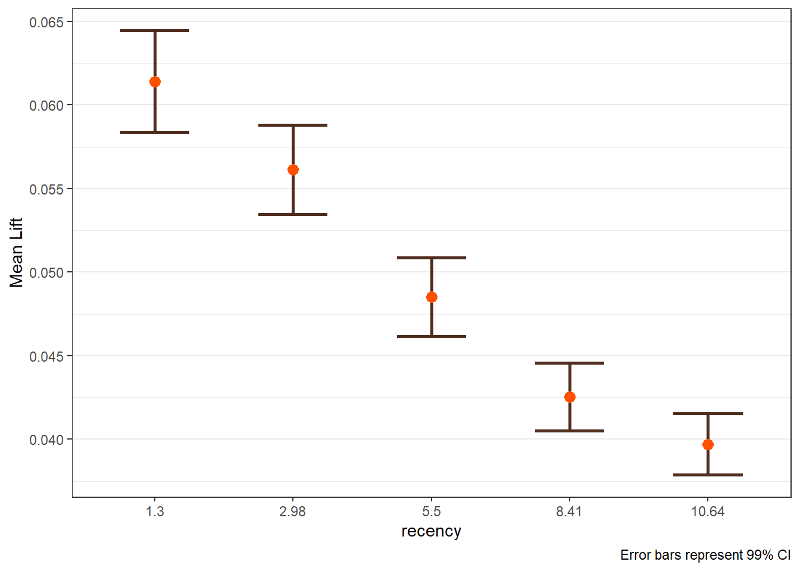
$history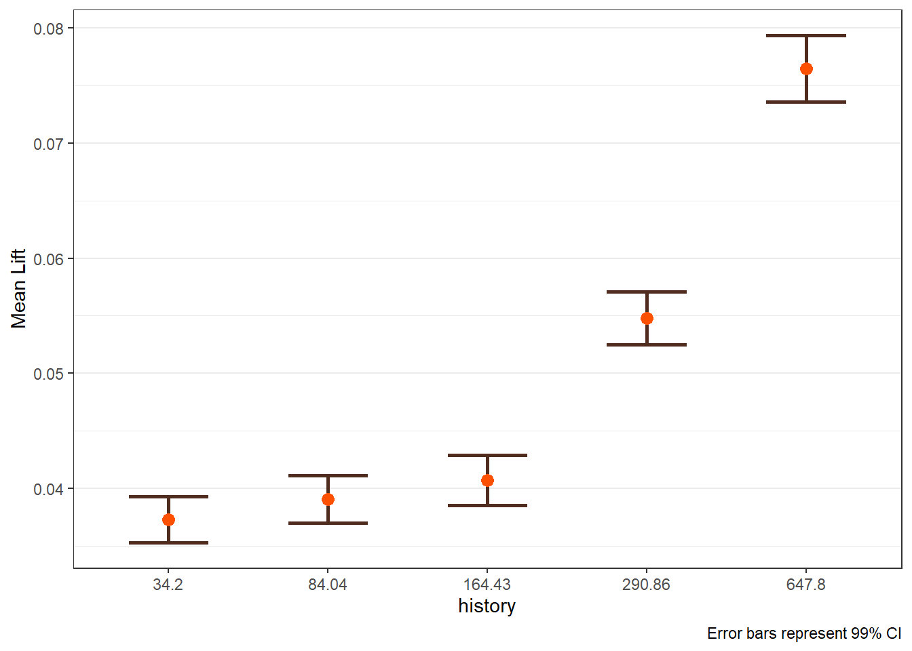
$zip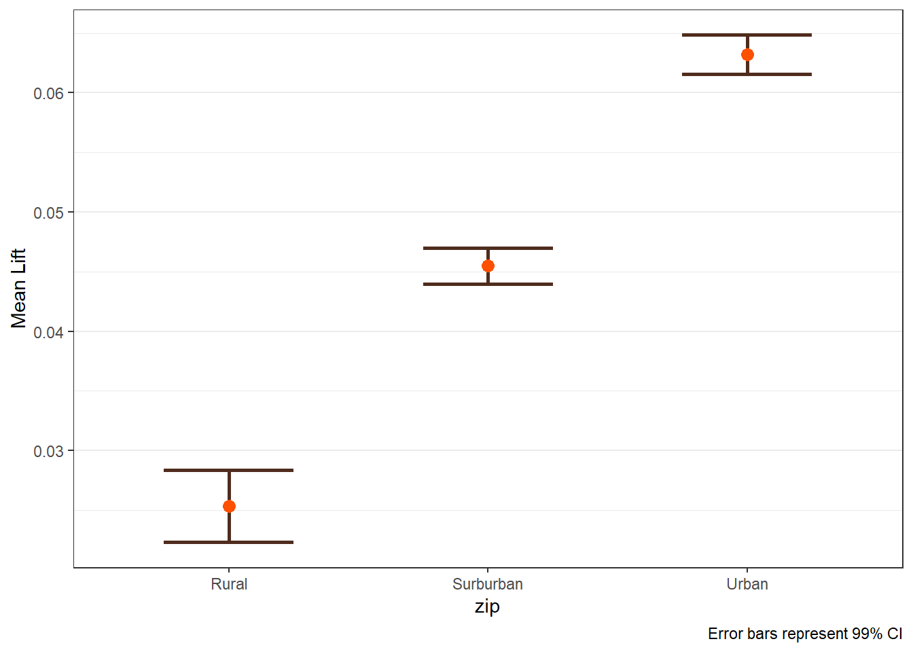
$womens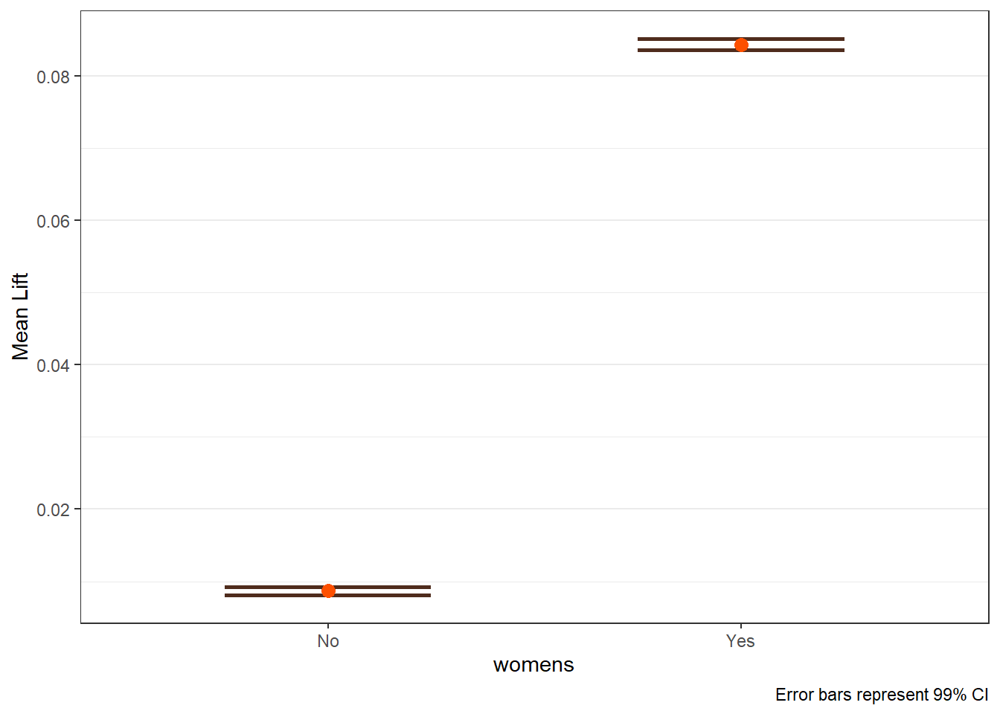
The pairs option is exteremely valuable when known interactions are includedin the model. The option can also be useful to help identify if an interaction may be warranted. If pairs is provided, the plots are saved in plots_pairs.
lift_out_pairs <- easy_liftplots(visit_uplift, vars = "all",
pairs = list(c("recency","zip"),
c("history","womens")),
ci = 0.99)
lift_out_pairs$plots_pairs$`recency × zip`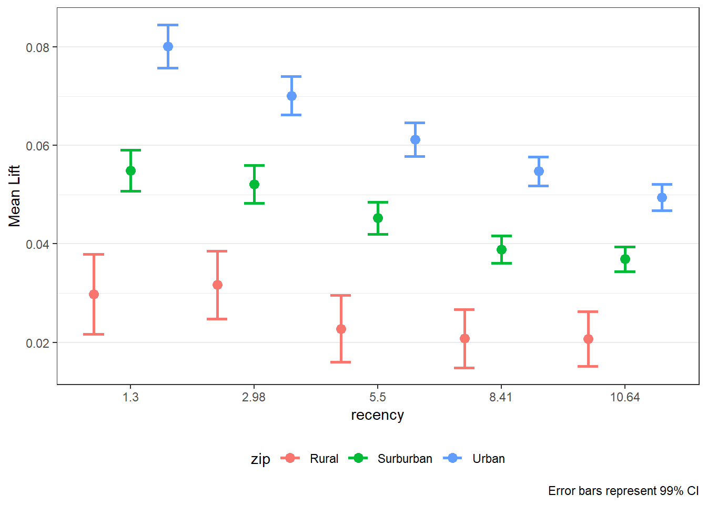
$`history × womens`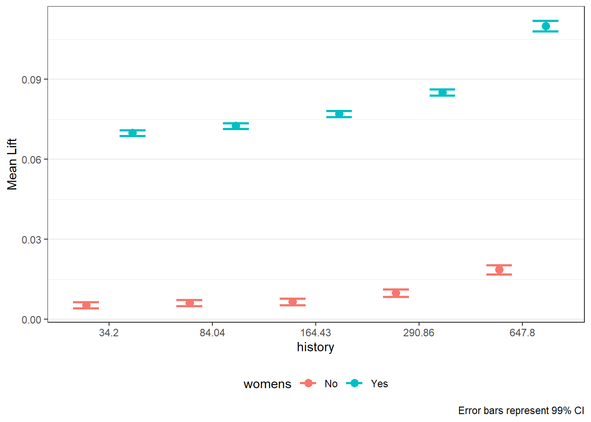
12.8 From Analysis to Action
Uplift modeling enables smarter targeting strategies:
- Send promotions only to customers with positive uplift.
- Prioritize customers in the highest uplift deciles.
- Avoid over-targeting customers unlikely to respond.
These strategies can improve campaign profitability and customer experience.
12.9 Summary
In this chapter, you learned how to:
- validate randomization in A/B tests,
- estimate average treatment effects,
- move beyond averages using uplift modeling,
- interpret uplift diagnostics for targeting decisions.
A/B testing answers whether a campaign works. Uplift modeling answers for whom it works.
12.10 What’s Next
In many real-world marketing problems, managers face a different challenge: customers are not choosing between respond and not respond, but among multiple competing alternatives. Examples include:
- Which brand a customer purchases
- Which product variant is selected
- Which service tier is chosen
In the next chapter, we introduce standard multinomial logistic regression, a workhorse model for analyzing and predicting choice among more than two options. You will learn how to:
- Model customer choice across multiple alternatives
- Interpret coefficients and predicted choice probabilities
- Evaluate model fit and classification performance
- Use multinomial logit models for applied marketing decisions
This next step shifts our focus from experimental treatment effects to choice modeling, setting the foundation for more advanced models of consumer decision-making used throughout marketing analytics and research.